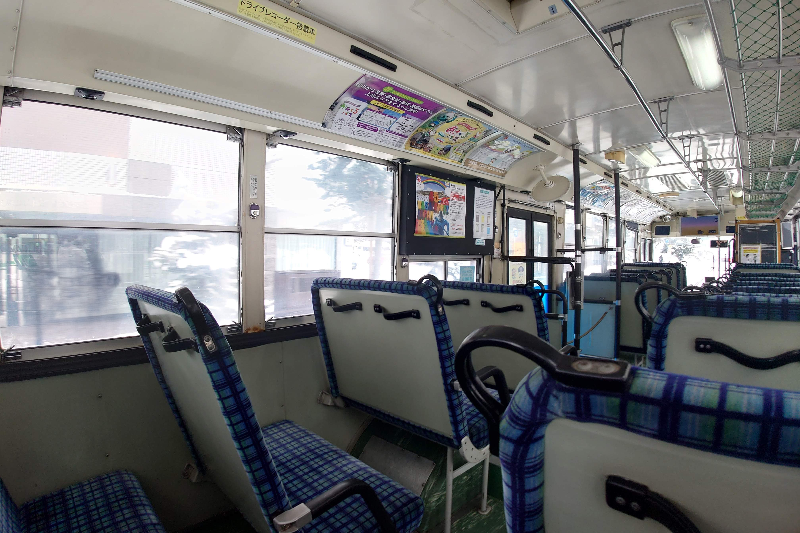

旭川200か・802
道北バスの旭川200か・802号車です。
この車両は首都圏の特定輸送中心の事業者から移籍してきました。
特徴としては、車内の座席が最後部を除きすべて2人掛けとなっています。
2025春現在、主に秋から冬のみの稼働となっています。
運用のルーティーンとしては、まず秋に銀泉台等の紅葉シャトルバスで活躍します。
その後は一般路線の代走などで運用に入る程度となり、一般路線での乗車難易度は非常に高い車両です。
また、道北バス最後のロッドシフト装備車となっております。
型式:KC-UA460LSN
年式:1997年式
元の活躍エリア:関東地方
車内はこのようになっています